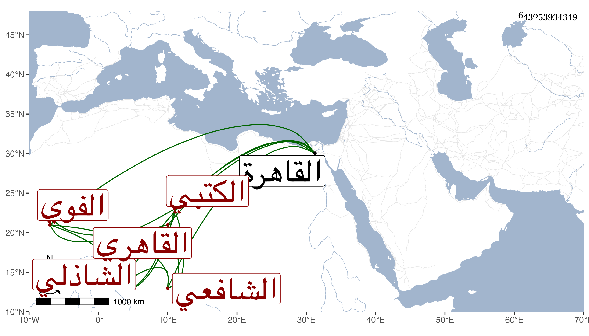

0902Sakhawi.DawLamic.ITO20230111-ara1.EIS1600.643053934349
Biography ID: 643053934349
571
حسين بن علي بن سالم بن إسماعيل بن ظهير الدين البدر الفوي الأصل القاهري الشافعي الشاذلي الكتبي . ولد سنة خمس وثمانمائة بالقاهرة ونشأ بها وصحب الشيخ محمد الحنفي ولازمه وتكسب بسوق الكتب مع يبس وشدة وقيل لي انه يعتقد ابن عربي ، ولذا كان ابن عزم وغيره من أضرابه يميل إليه كثيرا مع سماحة بالعارية وحرصه على الجماعة وملازمة التلاوة حتى بعد أن هش وانقطع عن السوق ثم انقطع أياما . ومات في ليلة الأحد سابع عشر جمادى الأولى سنة إحدى وتسعين وصلى عليه من الغد في الأزهر وبيعت كتبه بالعدد لكثرتها وجهل الناس عفا الله عنه .
